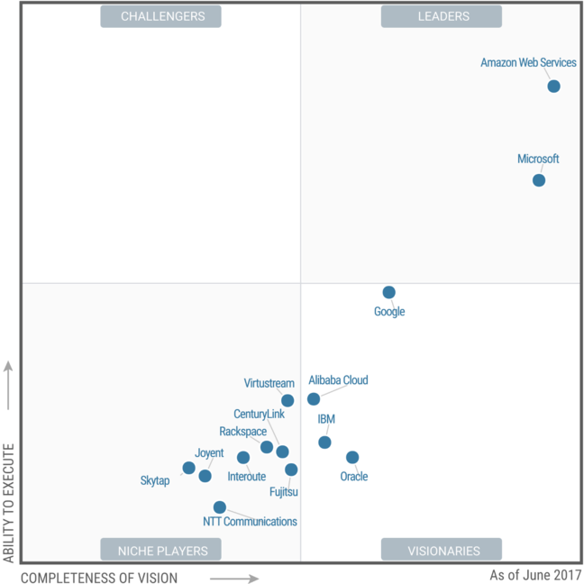
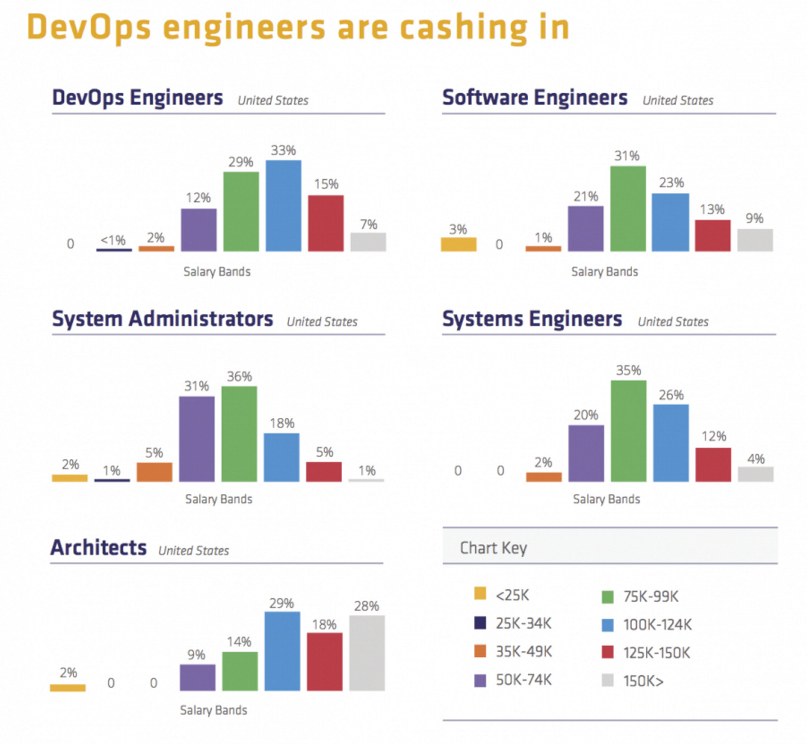
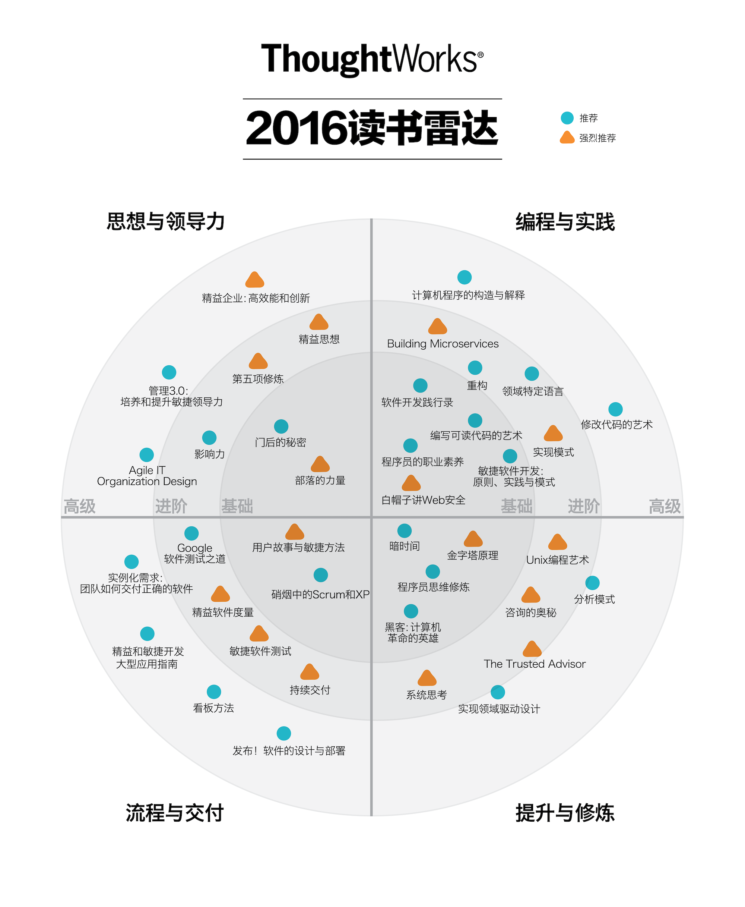
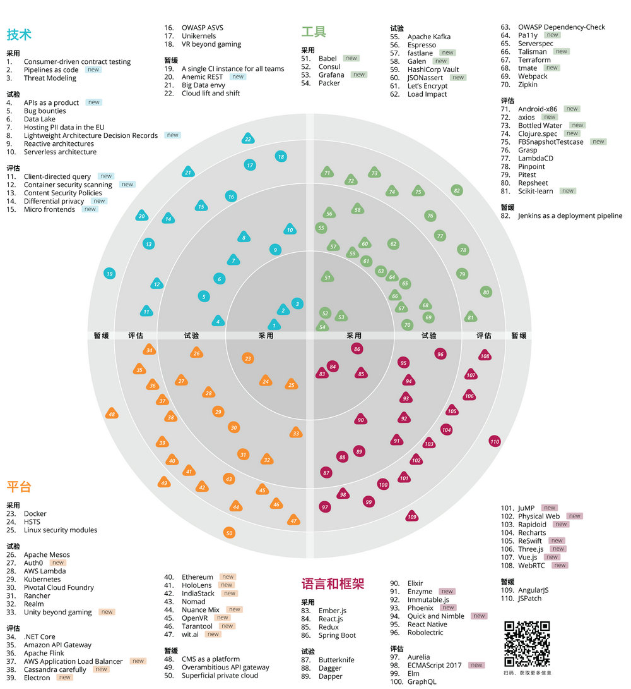

<!doctype html>
<html>
	<head>
		<meta charset="utf-8">
		<meta name="viewport" content="width=device-width, initial-scale=1.0, maximum-scale=1.0, user-scalable=no">

		<title>reveal.js</title>

		<link rel="stylesheet" href="css/reveal.css">
		<link rel="stylesheet" href="css/theme/beige.css">

		<!-- Theme used for syntax highlighting of code -->
		<link rel="stylesheet" href="lib/css/zenburn.css">

		<!-- Printing and PDF exports -->
		<script>
			var link = document.createElement( 'link' );
			link.rel = 'stylesheet';
			link.type = 'text/css';
			link.href = window.location.search.match( /print-pdf/gi ) ? 'css/print/pdf.css' : 'css/print/paper.css';
			document.getElementsByTagName( 'head' )[0].appendChild( link );
		</script>
	</head>
	<body>
		<div class="reveal">
			<div class="slides">
				<section data-markdown data-separator="---" data-separator-vertical="--">
				  <script type="text/template">
				    # 云上持续交付
				     - 讲师：杜屹东
				    ---
				    ### 概览
				    - 为什么上云
				    - 什么是云
				    - 如何上云（云上的持续交付）
				    ---
				    ### 摄像头被黑掉？为什么

				    - 钟馗之眼 & 撒旦

				     <center></center>
				    --
				     <center></center>
				    ---
				    ### 当你访问一台互联网设备的时候都发生了什么

				     <center></center>
				    ---
				    ### 访问淘宝

				     <center></center>
				    ---
				    ### 2016年淘宝 11.11
				    - 20秒，超1亿元。
				    - 52秒，超10亿元。
				    - 6分58秒，100亿元。
				    - 2016天猫双11全天交易额1207亿。
				    ---
				    ### 形同 Ddos

				    <center></center>
				    ---
				    ### 2016年淘宝 11.11

				    <center></center>
				    ---
				    ### 2016年淘宝 11.11

				    <center></center>
				    ---
				    ### 云服务厂商哪家强
				    
				    ---
				    <section data-background-video="What%20is%20Cloud%20Computing%20-%20Amazon%20Web%20Services-jOhbTAU4OPI.webm">
				    ---
				    ### 上云可以带来哪些好处
				    - 更好的开发体验，开发人员可以接入云办公
				    - 便于测试，测试人员可以随时在本地起一套与产品环境相同的测试环境
				    - 部署变得快速，架构变得敏捷
				    - 瞬间将服务扩展至全球，并得到集中式的反馈
					---
					### 持续交付
					
					---
					### 上云要解决的问题
					- 不能只上一家云
					- 如何更好地和云环境集成
					---
					### 自动化配置管理工具
					- Ansible
					- Chef
					- Pupet
					- Salt
					- Shell
					- Powershell
					---
					### 上云后的项目
					
					---
					### 流水线
					
					---
					### “云”工程师应该具备什么样的技能
					---
					### “云”工程师的就业前景怎么样
					
					---
					### “云”工程师应该具备什么样的技能
					- 会写业务代码
					- 虚拟化技术
					- 云服务，PaaS 平台
					- CICD
					- 产品思维
					---
					
					---
					### 技术雷达
					
					---
					## 谢谢！
				  </script>
				</section>
			</div>
		</div>

		<script src="lib/js/head.min.js"></script>
		<script src="js/reveal.js"></script>

		<script>
			// More info about config & dependencies:
			// - https://github.com/hakimel/reveal.js#configuration
			// - https://github.com/hakimel/reveal.js#dependencies
			Reveal.initialize({
				dependencies: [
					{ src: 'plugin/markdown/marked.js' },
					{ src: 'plugin/markdown/markdown.js' },
					{ src: 'plugin/notes/notes.js', async: true },
					{ src: 'plugin/highlight/highlight.js', async: true, callback: function() { hljs.initHighlightingOnLoad(); } }
				]
			});
		</script>
	</body>
</html>
